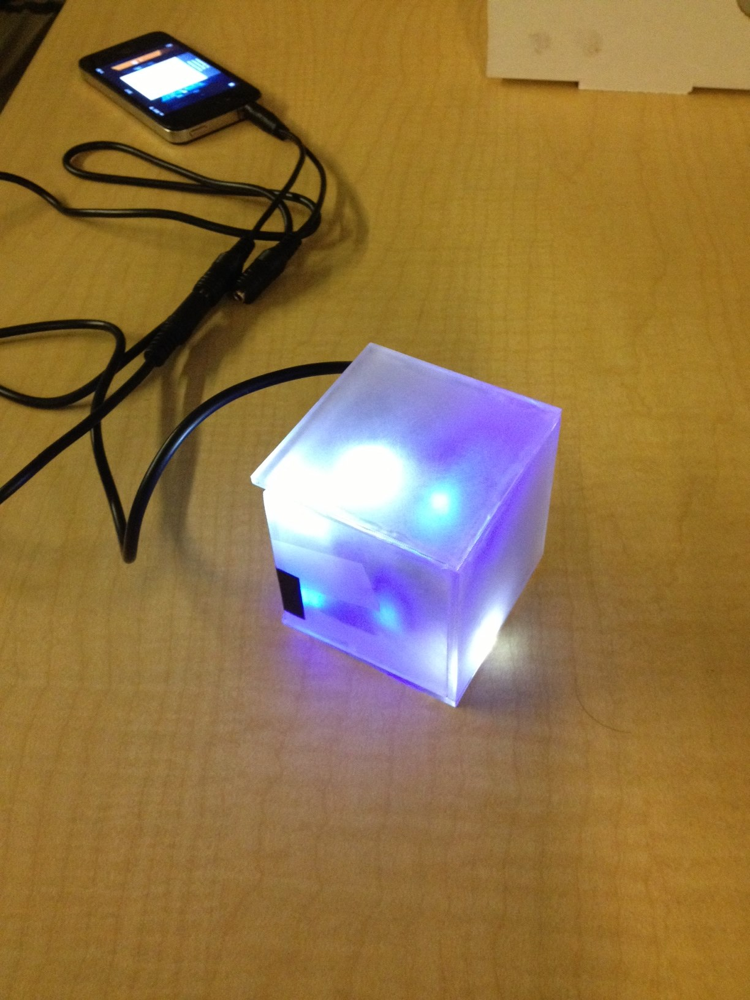

Workshops
We conducted a series of fall workshops for new members to gain basic electronic skills.
- LED Nightlight Workshop: Hosted by the CEID, this workshop is designed to introduce members to basic electronic components and soldering.
- LED music cube. This project further develops soldering skills and familiarity with basic electronics such as transistors and diodes.
- Photovore (light seeking robot). This workshop will introduce microcontrollers. Thus members will learn basic theory and how to use a microcontroller to control a system, which is an integral part of building and programing a robot.
These workshops help provide new members with the experience and competence necessary for work on robots destined for competition. Furthermore, these workshops contribute to Yale's culture of engineering by teaching individuals essential skills that can be applied to a wide array of projects and by giving people the confidence to pursue their own projects with the help of Yale's resources.